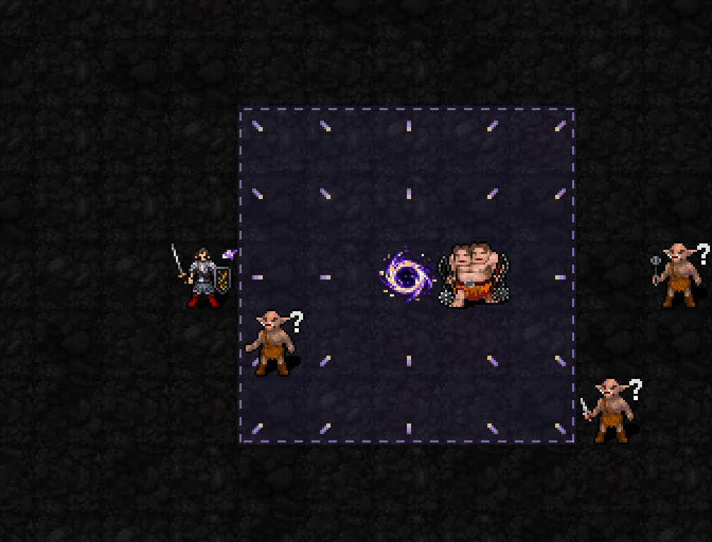
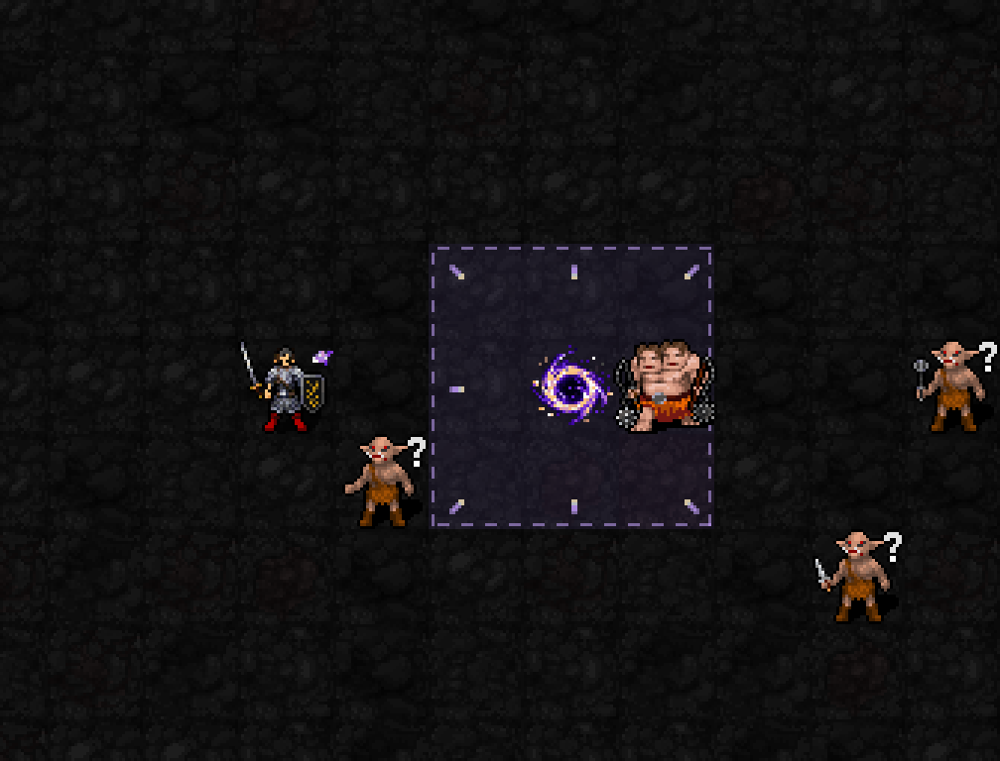
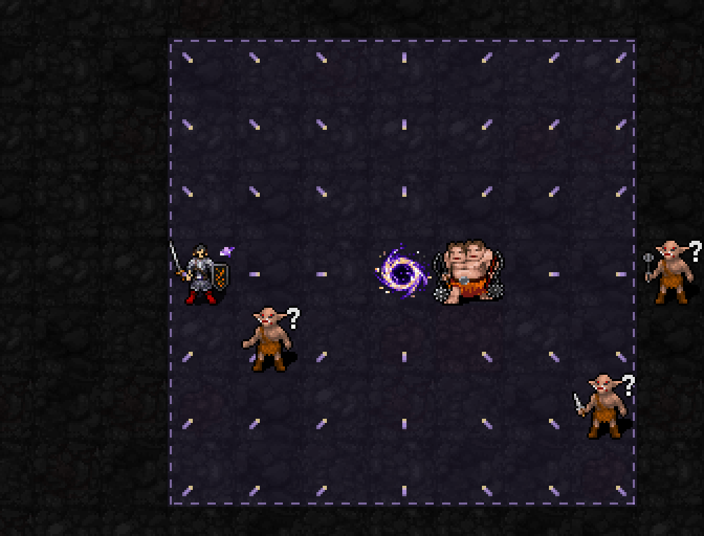

기도술에 따라 커지는 중력장 · 현재 외형 검토 중
신앙75 해금 / 최소 기도술 제한 없음 / 예정 비용 MP3·신앙3·1턴

중앙의 작은 보라·금빛 중력핵, 중심으로 흐르는 바닥 입자, 범위를 둘러싼 끊어진 연보라 테두리. 바닥 흐름은 몹 아래에 표시합니다.


| 항목 | 예정 효과 |
|---|---|
| 설치 | 사거리4의 보이는 유효 바닥 / 하나만 유지 / 중심 고정 |
| 지속 | 8+0.2I턴. I12에서10.4턴 |
| 주기 | 설치 완료2턴 뒤부터 매2턴. 애니메이션 반복 횟수가 피해·끌기 횟수는 아닙니다. |
| 압축 피해 | 1d(4+⌊I/4⌋), AC 한 번 적용. I12:1d7·평균4 |
| 끌기 | 중심 방향1칸. 확률75+2I−2HD%, 최소25%·최대95%. I12·HD10:79% |
| 면역·아군 | 끌기 면역·이동할 칸이 없는 적도 압축 피해는 받음. 자신·아군 제외 |
실제 SDL 렌더러에 새 범위를 준비한 외형 미리보기입니다. 이번 GIF에서는 몹이 이동하거나 HP가 줄지 않습니다. 개편된 범위·피해·끌기와 1성 MP/주문 선물·5성 응축은 아직 전투 코드에 연결하지 않았습니다. 일반 실행본 su-five01 유지. 9/25/49칸 표시·상태/RNG 보존·22신 및 저장 복원 검사 통과.
중력핵 원화는 built-in imagegen으로 생성하고28~32px로 적용. 바닥 입자·테두리는 native 렌더러 도형입니다.